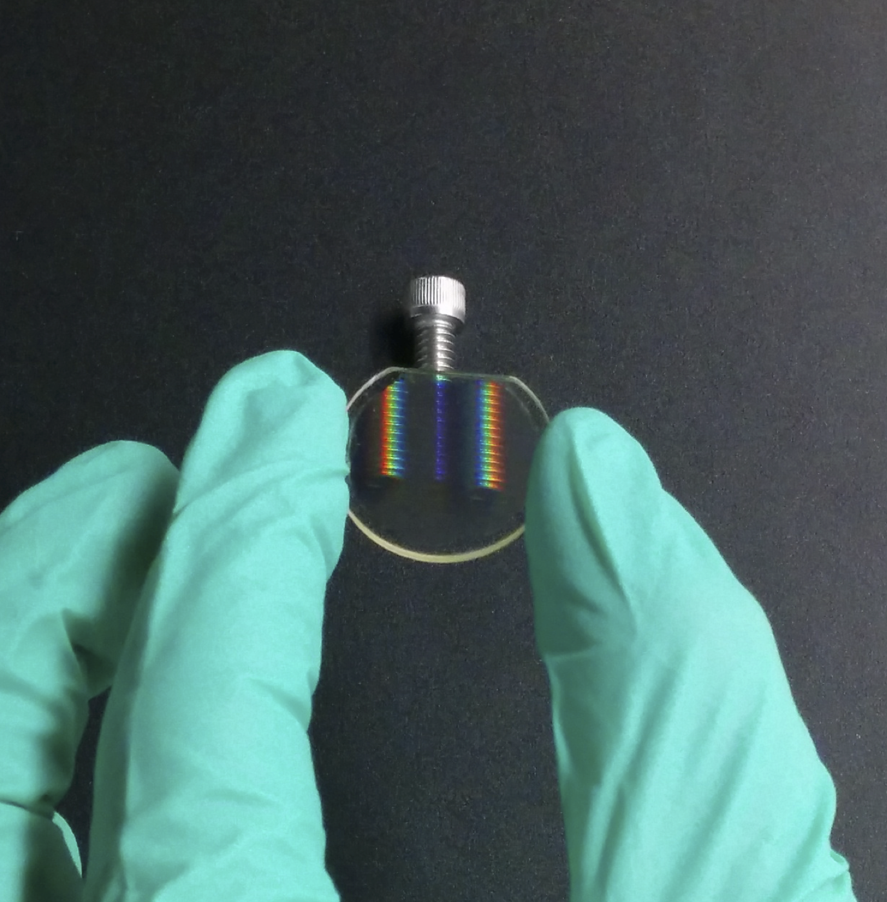
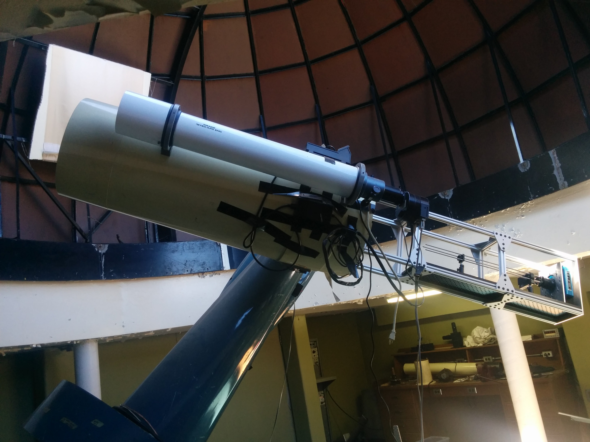

Polarization Gratings
During my PhD I led the characterization of a new type of diffraction grating for future astronomical instruments. Polarization gratings, pioneered at NCSU by Prof. Micheal Escuti, simultaneously act like diffraction gratings and polarizing beam splitters. In addition, they can be designed to provide extremely high diffraction efficiency across a broad wavelength range. At U of T we obtained a polarization grating optimized for operation in the 500-900nm for the purpose of lab testing. The results from our lab test indicate greater than 90% diffraction efficiency from 500-850nm, and near 99% polarization modulation efficiency. The results of our lab tests were reported at SPIE Astronomical Telescopes + Instrumentation 2014 and can be found in the proceedings (Millar-Blanchaer et al. 2014).
An image of a polarization grating in our lab
Following the successful lab tests I built a prototype instrument that I deployed on the U of T 16-inch telescope, to demonstrate on-sky a polarization grating for the first time (Millar-Blanchaer et al. 2016).
A polarization grating is now the key technology being used in WIRC+Pol to carry out a survey of brown dwarfs and free-floating exoplanets in order to characterize the clouds in their atmospheres. Please see my Science and Instrumentation sections for more info on WIRC+Pol.